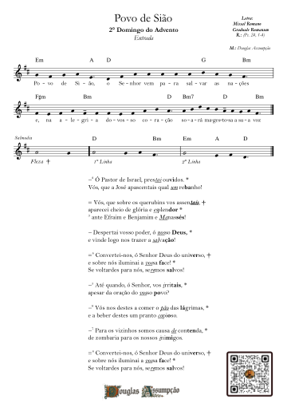

Advento · Antífona de Entrada
A Vós Senhor elevo a minha alma
2º Domingo do Advento

Canto de Entrada
YouTubeA Vós Senhor elevo a minha alma
Música: Douglas Assumpção
Novos vídeos às segundas-feiras. Se este canto ainda estiver agendado, aguarde a estreia no YouTube.

Para o seu ministério de música
A partitura
Partitura gratuita; contribuição opcional.
Abrir PDF em nova aba- Canto
- Entrada
- Tempo litúrgico
- Advento
- Letra
- Missal Romano · Graduale Romanum
- Música
- Douglas Assumpção
Partitura completa
A Vós Senhor elevo a minha alma
Use os controles do PDF para ampliar e imprimir. No celular, abra em nova aba para uma leitura mais confortável.
Neste vídeo celebramos o 2º Domingo do Advento, tempo de despertar do coração e vigilância amorosa. Elevamos nossa alma ao Senhor e renovamos a confiança na sua promessa: Ele visita o seu povo e nos convida à esperança.
Ler a meditação sobre a antífonaPara rezar e cantar
Meditação sobre o canto
No silêncio expectante do Advento, ergue-se um chamado antigo e santo: vigiar e orar, como fazem os santos Padres da Igreja em seus escritos. diocesedemaraba.com.br — um tempo de espera vigilante, não apenas pelo aniversário da encarnação, mas pela vinda definitiva do Senhor.
I. O Advento segundo os Santos
São João da Cruz, místico e doutor da Igreja, nos apresenta, em seu poema Romances, uma visão profunda do Advento:
"Quando foi chegado o tempo / Em que de nascer havia, / Assim como o desposado, / Do seu tálamo saía"ChurchPOP Português — uploads.weconnect.com
Ele usa a imagem do desposório para descrever a vinda de Cristo: o Filho, o Noivo, saindo do "tálamo" do Pai para encontrar a Esposa — a Igreja, a humanidade. Carmelitas Descalços
São João da Cruz prossegue, contemplando a humildade da encarnação:
"Abraçado a sua esposa / a bendita Mãe / Em um presépio poria / Entre pobres animais"ChurchPOP Português
Neste contraste — Deus infante entre animais, o desposório celebrado por homens e anjos — ele capta o mistério sublime de que o amor divino assume forma frágil para nos redimir.
Ele também medita sobre o paradoxo da encarnação:
O pranto do homem em Deus, / E no homem a alegria; / Coisas que num e no outro / Tão diferente ser soia."ChurchPOP Português
É o santo eco de que em Cristo estamos chamados a uma troca misteriosa: Ele chora por nós, e em nós encontramos, paradoxalmente, a fonte de alegria.
Essa visão advém de uma teologia muito profunda: Deus torna-se humano para que a humanidade seja desposada ao divino, para que a Esposa (a Igreja, cada alma) seja restaurada. Carmelitas Descalços
II. O canto gregoriano como expressão litúrgica dessa espera
Mas como traduzir essa espera mística em som? Aqui entra o canto gregoriano, patrimônio vivo da tradição litúrgica da Igreja. A Constituição Sacrosanctum Concilium, do Concélio Vaticano II, afirma que:
"A tradição musical da Igreja é um tesouro de inestimável valor — o canto sagrado, intimamente unido com o texto, constitui parte necessária ou integrante da Liturgia solene."Vaticano
Não é à toa que os documentos magisteriais da Igreja insistem numa música sacra que reflita a majestade de Deus, a santidade do culto e a universalidade da fé. O Papa Pio XII, na encíclica Musicae Sacrae Disciplina, fala disso claramente: o canto gregoriano, pelas suas melodias simples mas profundamente elevadas, "instila doçura na alma por meios musicais simples e fáceis, mas permeados de tão sublime e santa arte." Vaticano
Essa "doçura" evocada no canto gregoriano dialoga com o espírito do Advento: o canto litúrgico não é mero ornamento, mas oração vocal, vigília em forma de melodia. Cada nota, cada sílaba latente, pode ser entendida como vela acesa na escuridão, uma oferenda à espera do Noivo divino.
III. A união mística entre Advento e canto sacro
Quando contemplamos, com São João da Cruz, o mistério da vinda de Cristo — o Filho que se faz homem, ajoelhado no presépio — devemos ser também como os cantores da antiga Igreja: guardas da melodia, vigilantes do mistério através do canto.
O Advento nos convida a preparar o coração.
O canto gregoriano nos ajuda a moldar esse coração na sobriedade, na reverência e na harmonia com o sublime.
E os santos, especialmente São João da Cruz, nos guiam para uma compreensão mais alta: a alma deve tornar-se uma casa para o Esposo, assim como Maria acolheu o Verbo no seu seio.
Nesse encontro — entre vigilância, oração, música e mistério — descobrimos que o Advento é mais do que expectativa: é participação na história do amor trinitário, através de melodias antigas que nos recordam quem somos e para quem vivemos.
Prepare seu coração
O Advento nos convida a despertar, a nos preparar espiritualmente para a vinda de Cristo. Que este tempo de espera fecunde em nós a esperança, a vigilância e a profunda alegria de um Deus que vem ao nosso encontro.
Deseja continuar sua jornada devocional?
Apoie nossa missão
Escaneie para fazer um PIX

Ou copie a chave PIX: